背景介绍
传统waf以规则匹配为主，如果只是无差别的使用规则匹配整个数据包，当规则数量逐渐变多，会造成更多性能损耗，当然还会发生误报情况。为了能够解决这些问题，需要对数据包进行解析，进行精准位置的规则匹配。
正常业务中上传表单使用普遍，不仅能够传参，还可以进行文件的上传，当然这也是一个很好的攻击点，waf想要能够精准拦截针对表单的攻击，需要进行multipart/form-data格式数据的解析，并针对每个部分，如参数值，文件名，文件内容进行针对性的规则匹配拦截。
虽然RFC规范了multipart/form-data相关的格式与解析，但是由于不同后端程序的实现机制不同，而且RFC相关文档也会进行增加补充，最终导致解析方式各不相同。对于waf来说，很难做到对各个后端程序进行定制化解析，尤其是云waf更加无法实现。
所以本文主要讨论，利用waf和后端程序对multipart/form-data的解析差异，造成对waf的bypass。
multipart/form-data相关RFC:
- 基于表单的文件上传: RFC1867
- multipart/form-data: RFC7578
- Multipart Media Type: RFC2046#section-5.1
解析环境
Flask/Werkzeug解析环境：docker/httpbin
Java解析环境：Windows10 pro 20H2/Tomcat9.0.35/jdk1.8.0_271/commons-fileupload
Java输出代码：
1 | String result = ""; |
PHP解析环境：Ubuntu18.04/Apache2.4.29/PHP7.2.24
PHP输出代码：
1 |
|
基础格式
1 | POST /post HTTP/1.1 |
此表单数据含有一个文件，name为name，filename为file.jsp，file_content为This_is_file_content.，还有一个非文件的参数，其name为key，value为This_is_a_value.。
httpbin解析结果
1 | { |
详细解析
1. Content-Type
Content-Type: multipart/form-data; boundary=I_am_a_boundary
对于上传表单类型，Content-Type必须为multipart/form-data，并且后面要跟一个边界参数键值对（boundary），在表单中分割各部分使用。
倘若multipart/form-data编写错误，或者不写boundary，那么后端将无法准确解析这个表单的每个具体内容。
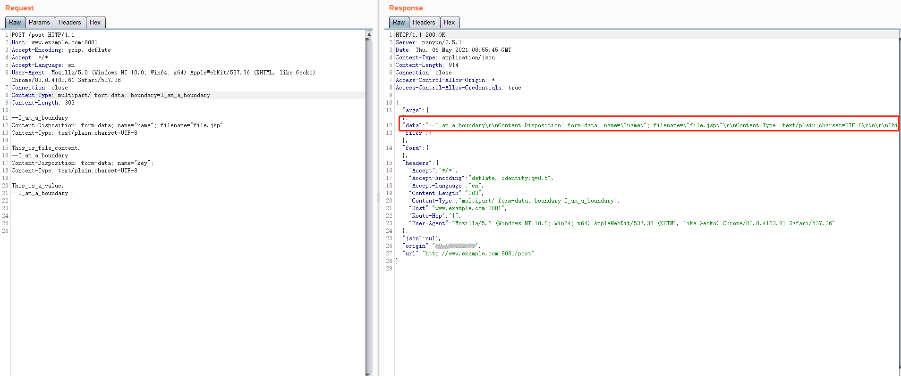
2. Boundary
boundary: RFC2046
boundary需要按照以下BNF巴科斯范式
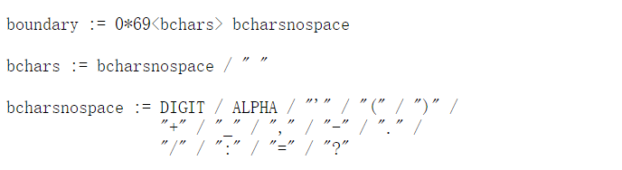
简单解释就是，boundary不能以空格结束，但是其他位置都可以为空格，而且字符长度在1-70之间，此规定语法适用于所有multipart类型，当然并不是所有程序都按照这种规定来进行multipart的解析。
从前面介绍的multipart基础格式可以看出来，真正作为表单各部分之间分隔边界的不仅是Content-Type中boundary的值，真正的边界是由--和boundary的值和末尾的CRLF组成的分隔行，当然为了能够准确解析表单各个部分的数据，需要保证分隔行不会出现在正常的表单中的文件内容或者参数值中，所以RFC也建议使用特定的算法来生成boundary值。
flask解析结果
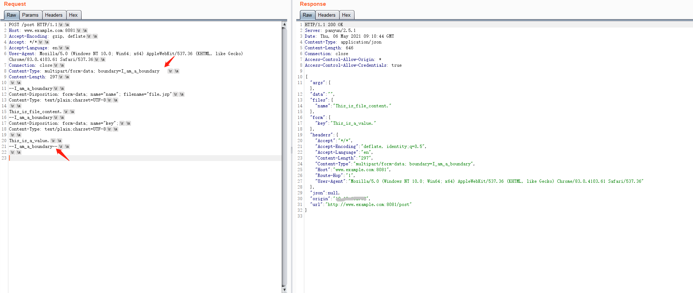
这里需要注意两个点，第一，最终表单数据最后一个分隔边界，要以--结尾。第二，RFC规定原文为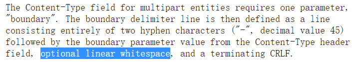
也就是说，整体的分隔边界可以含有optional linear whitespace。
空格
注：本文使用空格的地方[\r\n\t\f\v ]都可以代替使用，文中只是介绍了使用空格的结果，大家可以测试其他的，waf或者后端程序在解析\n时，会产生很多不同结果，感兴趣可自行测试。
首先使用boundary的值后面加空格进行测试，flask和php都能够正常的解析出表单内容。
php解析结果
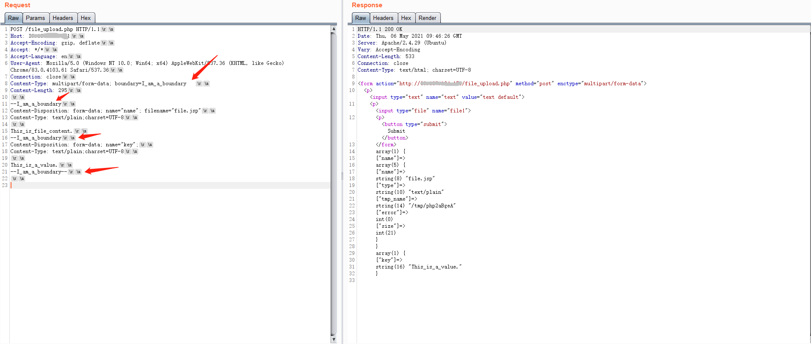
虽然boundary的值后面加了空格，但是在作为分隔行的时候并没有空格也可以正常解析，但是经测试发现如果按照RFC规定那样直接在分隔行中加入空格，效果就会不一样。
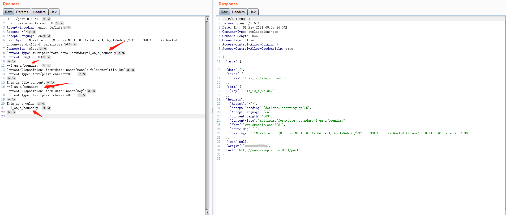
对于flask来说是按照了RFC规定实现，无论Content-Type中boundary的值后面是不加空格还是加任意空格，在表单中非结束分隔行里都可以随意加空格，都不影响表单数据解析，但是需要注意的就是，在最后的结束分隔行中，加空格会导致解析失败。
很有意思的是php解析过程中，在非结束分隔行中不能增加空格，而在结束分隔行中增加空格，却不会影响解析。
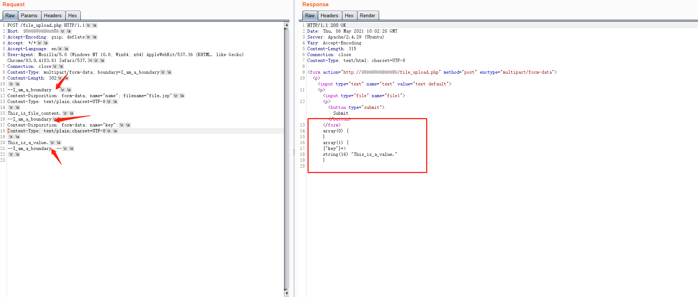
可以看到，加了空格的分隔行内的文件内容数据没有被正确解析，而没加空格的非文件参数被解析成功，而且结束分隔行中也添加了空格。
测试的时候偶然发现在如果在multipart/form-data和;之间加空格，如Content-Type: multipart/form-data ; boundary="I_am_a_boundary"，flask会造成解析失败，php解析正常。
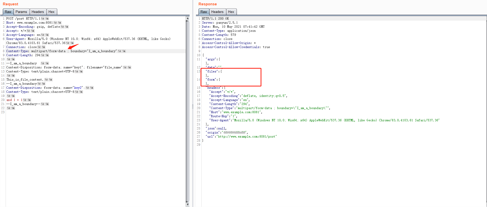
正常来说，通过正则进行匹配解析的flask应该不会这样，具体实现在werkzeug/http.py:L406。
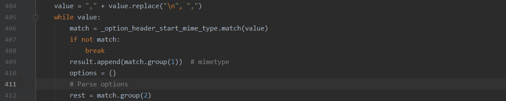
简单来说就是将Content-Type: multipart/form-data ; boundary="I_am_a_boundary"进行正则匹配，然后将第一组匹配结果当作mimetype，第二组作为rest，由后面处理boundary取值，看下这个正则。
1 | _option_header_start_mime_type = re.compile(r",\s*([^;,\s]+)([;,]\s*.+)?") |
为了看着美观，使用regex101看下。
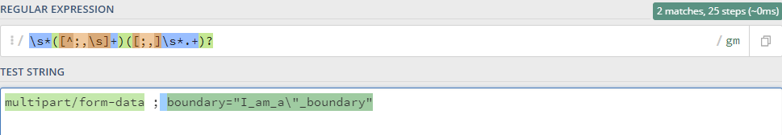
很明显，由于第一组匹配非空字符，所以到空格处就停了，但是第二组必须是[;,]开头，导致第二组匹配值为空，无法获取boundary，最终解析失败。
双引号
boundary的值是支持用双引号进行编写的，就像是表单中的参数值一样，这样在写分隔行的时候，就可以将双引号内的内容作为boundary的值，php和flask都支持这种写法。使用单引号是无法达到效果的，这也是符合上文提到的BNF巴科斯范式的bcharsnospace的。
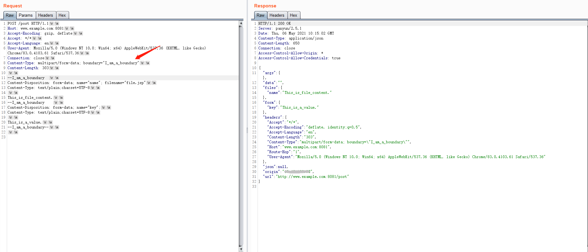
测试一下让重复多个双引号，或者含有未闭合的双引号或者双引号前后增加其他字符会发生什么。
Content-Type: multipart/form-data; boundary=a"I_am_a_boundary"
Content-Type: multipart/form-data; boundary= "I_am_a_boundary"
Content-Type: multipart/form-data; boundary= "I_am_a_boundary"a
Content-Type: multipart/form-data; boundary=I_am_a_boundary"
Content-Type: multipart/form-data; boundary="I_am_a_boundary
Content-Type: multipart/form-data; boundary="I_am_a_boundary"aa"
Content-Type: multipart/form-data; boundary=""I_am_a_boundary"
对于php来说相对简单，因为只要出现第一个字符不是双引号，就算是空格，都会将之作为boundary的一部分，所以前四种解析类似，当第一个字符为双引号时，会找与之对应的闭合的双引号，如果找到了，那么就会忽略之后的内容直接取双引号内内容作为boundary的值。
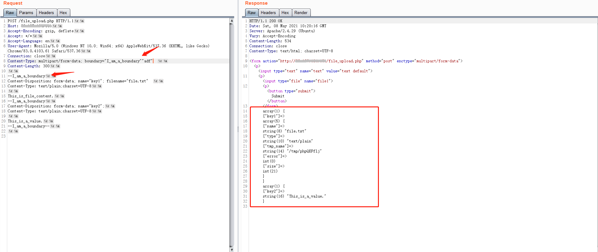
然而如果没有找到闭合双引号，就会导致boundary取值失败，无法解析multipart/form-data。
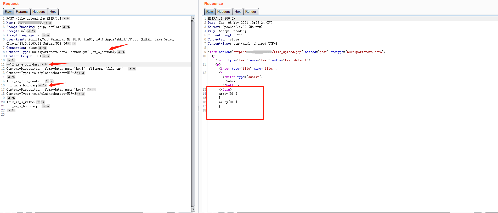
当然对于最后一种情况，会取一个空的boundary值，我也以为会解析失败，但是很搞笑的是，竟然boundary值为空，php也可以正常解析，当然也可以直接写成Content-Type: multipart/form-data; boundary=。

大多数waf应该会认为这是一个不符合规范的boundary，从而导致解析multipart/form-data失败，所以这种绕过waf的方式显得更加粗暴。
对于flask来说，可以看下解析boundary的正则werkzeug/http.py:L79。
1 | _option_header_piece_re = re.compile( |
这个正则可以解释本文的大多数flask解析结果产生的原因，这里看到flask对于boundary两边的空格是做了处理的，对于双引号的处理，都会取第一对双引号内的内容作为boundary的值，对于非闭合的双引号，会处理成token形式，将双引号作为boundary的一部分，并不会像php一样解析boundary失败。
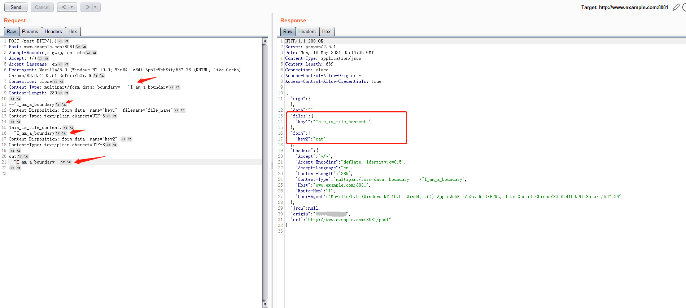
从上面正则也能看出，对于最后一种Content-Type的情况，flask也会取空值作为boundary的值，但是这不会同过flask对boundary的正则验证，导致boundary取值失败，无法解析，下文会提及到。
转义符号
以flask的正则中quoted string和token作为区分是否boundary为双引号内取值，测试两种转义符的位置会怎样影响解析。
\在token中Content-Type: multipart/form-data; boundary=I_am_a\"_boundary这种形式的boundary，flask和php都会将
\认定为一个字符，并不具有转义作用，并将整体的I_am_a\"_boundary内容做作为boundary的值。
\在quoted string中Content-Type: multipart/form-data; boundary="I_am_a\"_boundary"对于flask来说，在双引号的问题上，
werkzeug/http.py:L431中调用一个处理函数，就是取双引号之间的内容作为boundary的值。
可以看到，在取完boundary值之后还做了一个
value.replace("\\\\", "\\").replace('\\"', '"')的操作，将转义符认定为具有转义的作用，而不是单单一个字符，所以最终boundary的值是I_am_a"_boundary。
对于php来说，依旧和
token类型的boundary处理机制一样，认定\只是一个字符，不具有转义作用，所以按照上文双引号中提到的，由于遇到第二个双引号就会直接闭合双引号，忽略后面内容，最终php会取I_am_a\作为boundary的值。
空格 & 双引号
上文提到使用空格对解析的影响，既然可以使用双引号来指定boundary的值，那么如果在双引号外或者内加入空格，后端会如何解析呢？
双引号外
对于flask来说，依旧和普通不加双引号的解析一致，会忽略双引号外（两边）的空格，直接取双引号内的内容作为boundary的值，php对于双引号后面有空格时，处理机制和flask一致，但是当双引号前面有空格时，会无法正常解析表单数据内容。

解析会和不带双引号的实现一致，此时php会将前面的空格和后面的双引号和双引号的内容作为一个整体，将之作为boundary的值，当然这虽然符合RFC规定的boundary可以以空格开头，但是把双引号当作boundary的一部分并不符合。

双引号内
此时php会取双引号内的所有内容（非双引号）作为boundary的值，无论是以任意空格开头还是结束，其分隔行中boundary前后的空格数，要与Content-Type中双引号内boundary前后的空格个数一致，否则解析失败。

值得注意的是，flask解析的时候，如果双引号内的boundary值以空格开始，那么在分隔行中类似php只要空格个数一致，就可以成功解析，但是如果双引号内的boundary的值以空格结束，无论空格个数是否一致，都无法正常解析。
 想知道为什么出现这种状况，只能看下werkzeug是如何实现的，flask对boundary的验证可以在
想知道为什么出现这种状况，只能看下werkzeug是如何实现的，flask对boundary的验证可以在werkzeug/formparser.py:L46看到。1
2#: a regular expression for multipart boundaries
_multipart_boundary_re = re.compile("^[ -~]{0,200}[!-~]$")这个正则是来验证boundary有效性的，比较符合RFC规定的，只不过在长度上限制更小，可以是空格开头，不能以空格结尾，但是用的不是全匹配，所以以空格结尾也会通过验证。
上图使用
boundary= " I_am_a_boundary "，所以boundary的值为" I_am_a_boundary "双引号内的内容，而且这个值也会通过boundary正则的验证，最终还是解析失败了，很是是奇怪。上文空格中提到，对于flask来说，在分隔行中boundary后可以加任意空格不影响最终的解析的。
原因是解析multipart/form-data具体内容时，为了寻找分割行，将每一行数据都进行了一个
line.strip()操作，这样会把CRLF去除，当然会把结尾的所有空格也给strip掉，所以当boundary不以空格结尾时，在分隔行中可以随意在结尾加空格。但是这也会导致一个问题，当不按照RFC规定，用空格结尾作为boundary值，虽然过了flask的boundary正则验证，但是在解析body时，却将结尾的空格都strip掉，导致在body中分隔行经过处理之后变为了-- I_am_a_boundary，这与Content-Type中获取的boundary值（结尾含有空格）并不一致，导致找不到分隔行，解析全部失败。
结束分隔行
在上文空格内容中提到，php在结束分割行中的boundary后面加空格并不会影响最终的解析，其实并不是空格的问题，经测试发现，其实php根本就没把结束分隔行当回事。
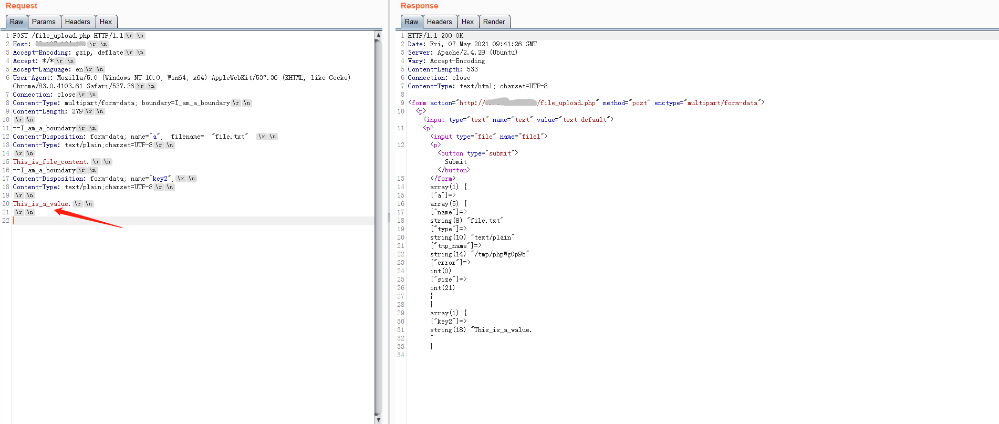
可以看到，没有结束分隔行，php会根据每一分隔行来分隔各个表单部分，并根据Content-Length来进行取表单最后一部分的内容的值，然而这是极不尊重RFC规定的，一般waf会将这种没有结束分隔行的视为错误的multipart/form-data格式，从而导致整体body解析失败，那么waf可以被绕过。
上文提到flask会对multipart/form-data的每一行内容进行strip操作，但是由于结束分隔行需要以--结尾，所以在strip的过程中只会将CRLFstrip掉，但是在解析boundary的时候，boundary是不能以空格为结尾的，最终会导致结束分隔行是严谨的--BOUNDARY--CRLF，当然如果使用双引号使boundary以空格结尾，那么结束分隔行是可以正确解析的，但是非结束分隔行无法解析还是会导致整体解析失败。
其他
从flask的代码能够看出来，支持参数名的quoted string形式，就是参数名在双引号内。
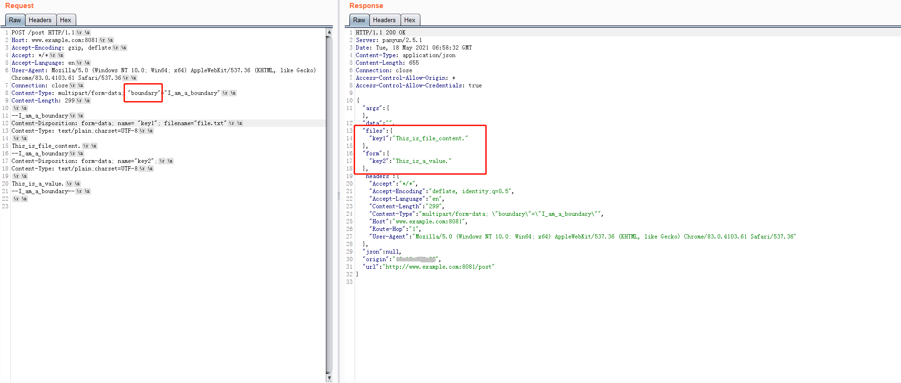
而对于Java来说，支持参数名的大小写不敏感的写法。
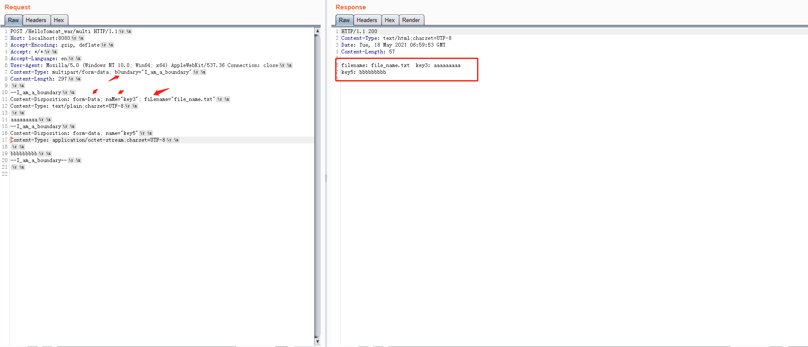
3. Content-Disposition
对于multipart/form-data类型的数据，通过分隔行分隔的每一部分都必须含有Content-Dispostion，其类型为form-data，并且必须含有一个name参数，形如Content-Disposition: form-data; name="name"，如果这部分是文件类型，可以在后面加一个filename参数，当然filename参数是可选的。
空格
经常和waf打交道的都知道，随便一个空格，可能就会发生奇效。对于Content-Disposition参数，测试在四个位置加任意的空格。
原本有空格的位置
Content-Disposition: form-data; name="key1"; filename="file.php"Content-Disposition: form-data; name="key1" ; filename="file.php"Content-Disposition: form-data; name="key1" ; filename="file.php"Content-Disposition: form-data ; name="key1" ; filename="file.php"前三种类型，php和flask解析都是准确的。

但是第四种对于
Content-Disposition: form-data ;来说，php解析准确，认为其是正常的multipart/form-data数据，然而flask解析失败了，并且直接返回了500（：
这里flask处理Content-Disposition的方式是和request_header中Content-Type是一致的，经过了
r",\s*([^;,\s]+)([;,]\s*.+)?"匹配，由于空格导致后面的name和filename无法解析，只不过这种情况会返回500。对于后续的name和filename得解析也是和request_header中Content-Type一致，后面匹配中的group作为rest进行后续的正则匹配，匹配用到的正则，是上文第2部分（Boundary）双引号中的_option_header_piece_re。参数名和等于号之间
Content-Disposition: form-data; name ="key1"; filename="file.php"Content-Disposition: form-data; name="key1"; filename ="file.php"flask正常解析

php解析失败，不仅第一部分数据无法解析，第二部分非文件参数也解析失败，可见php解析会将
name=/filename=作为关键字匹配，当发现name=和filename=都不存在时，直接不再解析了，这与boundary的解析是不一样的，使用Content-Type: multipart/form-data; boundary =I_am_a_boundary一样可以正常解析处boundary的值。
如果我们不在name和等于号之间加空格，只在filename和等于号之间加空格，形如
Content-Disposition: form-data; name="key1"; filename ="file.txt"，那么php会将这种解析会非文件参数。
如果waf支持这种多余空格形式的写法，那么将会把这种解析为文件类型，造成解析上的差异，waf错把非文件参数当作文件，那么可能绕过waf的部分规则。
参数值和等于号之间
Content-Disposition: form-data; name= "key1"; filename= "file_name"php和flask解析正常。
参数值中
这个没啥注意的，flask会按照准确的name解析。

php会忽略开头的空格，并把非开头空格转化为
_，具体原因可以看php-variables。
重复参数
重复name/filename参数名
php和flask都会取最后一个name/filename，从flask代码来看，存储参数使用了字典，由于具有相同的key=name，所以最后在解析的时候，遇到相同key的参数，会进行参数值的覆盖。

这种重复参数名的方式，在下文中将结合其他方式进行绕过waf。
重复name/filename参数名和参数值
接着尝试重复整个form-data的一部分，构造这样一个数据包进行测试。
1
2
3
4
5
6
7
8
9
10
11
12
13
14
15
16
17
18
19
20
21--I_am_a_boundary
Content-Disposition: form-data; name="key3"; filename="file_name.asp"
Content-Type: text/plain;charset=UTF-8
This_is_file_content.
--I_am_a_boundary
Content-Disposition: form-data; name="key3"; filename="file_name.jsp"
Content-Type: text/plain;charset=UTF-8
This_is_file2_content.
--I_am_a_boundary
Content-Disposition: form-data; name="key5";
Content-Type: text/plain;charset=UTF-8
aaaaaaaaaaaa
--I_am_a_boundary
Content-Disposition: form-data; name="key5";
Content-Type: text/plain;charset=UTF-8
bbbbbbbbbbbb
--I_am_a_boundary--对于php来说，和在同一个Content-Disposition中重复name/filename一致，会选取相同name部分中最后一部分。

对于flask来说，带有filename的，会取第一部分，而且相同name的非文件参数，会将两个取值作为一个列表解析。

其实这里是httpbin处理后的结果，为了准确看到flask解析结果，需要直接查看
request.form/request.files。
使用的是
ImmutableMultiDict，在werkzeug/datastructures.py中定义，可以看到，最终form和files都是把所有multipart数据都获取了，即使具有相同的key。如果我们使用常用的keys()/values()/item()函数，都会因为相同key，而只能取到第一个key的值，想获取相同key的所有取值，需要使用ImmutableMultiDict.to_dict()方法，并设置参数flat=True。
httpbin就是在处理request.form时，多加了这种处理，导致最后看到两个取值的列表，但是在request.files处理时没有进行
to_dict。
由此可见，不同的后端程序，实现起来可能会不一样，如果waf在实现时，并没有将所有key重复的数据都解析出来，并且进入waf规则匹配，那么使用重复的key，也会成为很好的绕过waf的方式。
引号
上文提到，_option_header_piece_re这个正则在flask中也会用来解析Content-Disposition，所以对于name/filename的取值，和boundary取值机制是一样的，加了双引号是quoted string，没有双引号的是token。
所以主要分析php是如何处理的，首先php在处理boundary时，如果空格开头，那么空格将作为boundary的一部分即使空格后存在正常的双引号闭合的boundary。但是在Content-Disposition中，双引号外的空格是可以被忽略的，当然不使用双引号，参数值两边的空格也会被忽略。
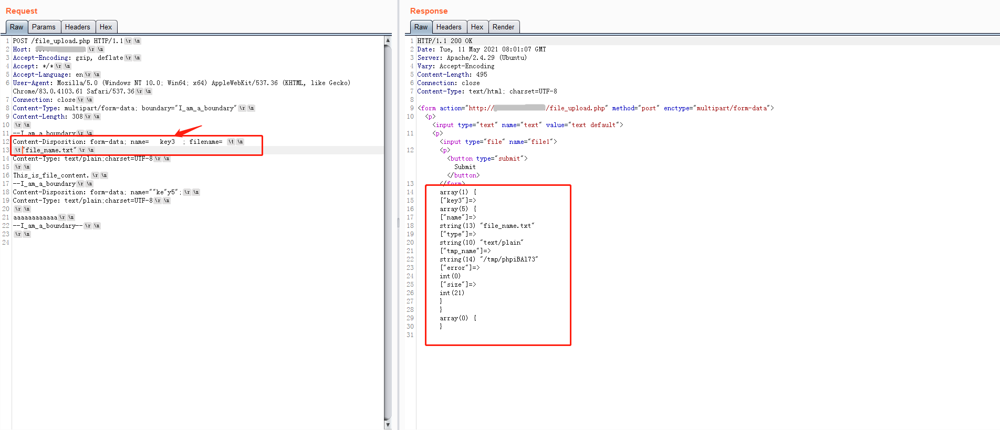
此小段标题引号，并没有像上一大段一样使用双引号，是因为php不仅支持双引号取值，也支持单引号取值，这很php。
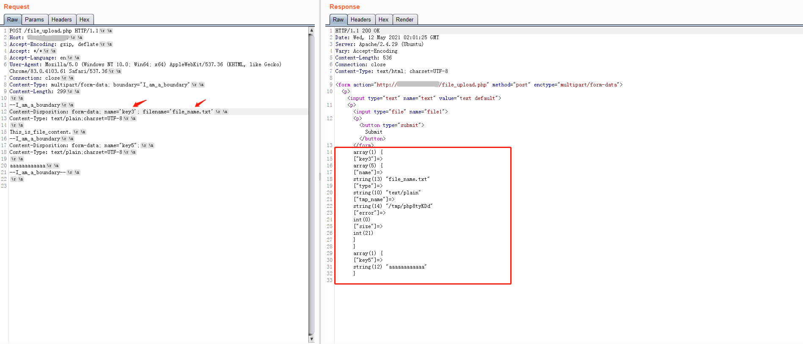
flask肯定是不支持单引号的，上面的正则能看出来，单引号会被当作参数值的一部分，这里看了下Java的commons-fileuploadv1.2的实现org.apache.commons.fileupload.ParameterParser.java:L76，在解析参数值的时候也是不支持单引号的。
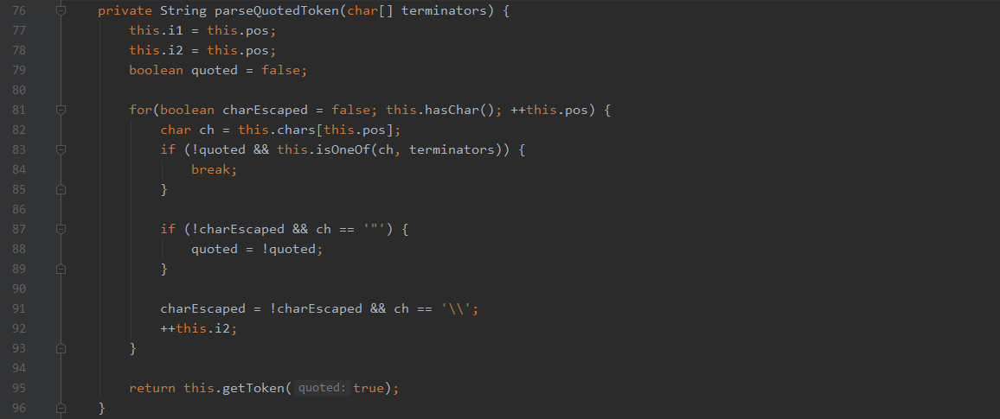
所以如果waf在multipart解析中是不支持参数值用单引号取值的，对于php而言，出现这种payload就可以导致waf解析错误。
Content-Disposition: form-data; name='key3; filename='file_name.txt; name='key3'
支持单引号的会将之解析为{"name": "key3"}，并没有filename参数，视为非文件参数
不支持单引号的会将之解析为{"name": "'key3'", "filename": "'file_name.txt"}，视为文件参数，将之后参数值视为文件内容。
这种waf和后端处理程序解析的不一致可能会导致waf被绕过。
此时，还有一个引号的问题没有解决，就是如果出现多余的引号会发生什么，形如Content-Disposition: form-data; name="key3"a"; filename="file_name;txt"，上文在boundary的解析中已经看到了结果，name会取key3，并忽略之后的内容，即使含有双引号，那么后面的filename内容还能正确解析吗？正好看看flask使用正则和Java/php使用字符解析带来的一些差异。
看一下flask的具体实现werkzeug/http.py:L402。
1 | result = [] |
使用_option_header_piece_re匹配到之后，会继续从下一个字符开始继续进入正则匹配，所以第二次进入正则时，rest为aaaa"; filename="file_name.txt"，以a开头就无法匹配中正则了，直接退出，导致filename解析失败，并且name取key3。
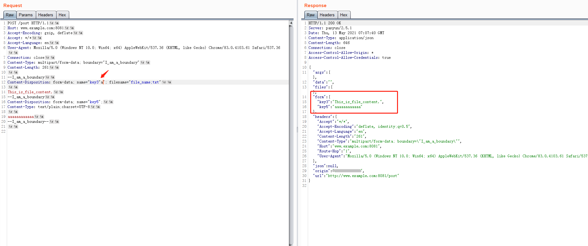
Java的代码在上面已经贴出，其中的terminators=";"，也就是说当出现双引号时，会忽略;，但是当找到闭合双引号时，取值没有结束，会继续寻找;，这就导致会一直取到闭合双引号外的;才会停止，这和php是不一致的，php虽然后面多余的双引号会影响后续filename取值，但是会在第一次出现闭合双引号时取值结束。
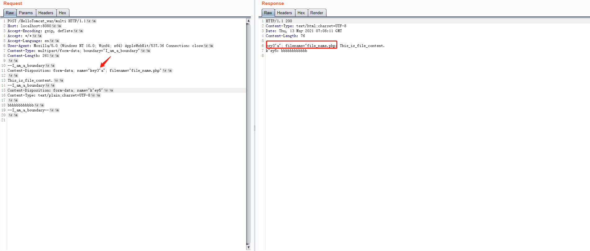
对于flask/php来说，如果waf解析方式和后端不相同，也可能会错误判断文件和非文件参数，但是Java后端很难使用，因为对于name的取值会导致后端无法正确获取。但是这个取值特性依旧有用，下文文件扩展名将进行介绍。
转义符号
php和flask都支持参数值中含有转移符号，从上面的_option_header_piece_re正则可以看出，和boundary取值一致，flask在quoted string类型的参数值中的转义符具有转义作用，在token类型中只是一个字符\，不具有转义作用。
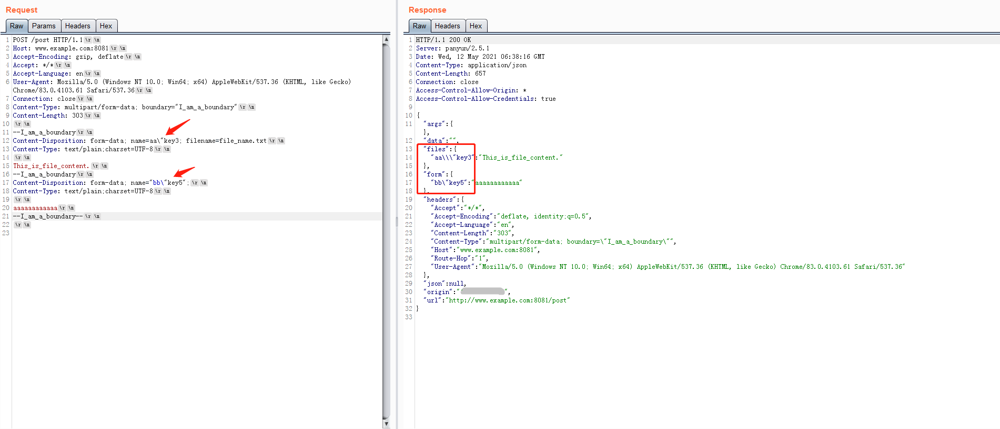
php虽然在token类型中，解析和对boundary解析一致，转义符号具有转义作用，但是在解析quoted string类型时解析方式和boundary竟然不一样了，解析boundary时，转义符为一个\字符不具有转义作用，所以boundary="aa\"bbb"会被解析为aa\，而在Content-Disposition中，转义符号具有转义作用。
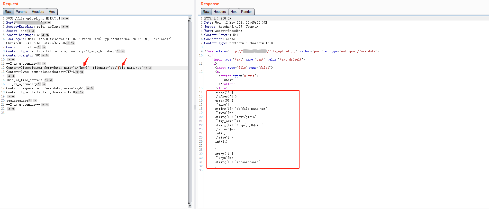
和上文提到的php解析单引号的方式一样，存在这么一种payload
Content-Disposition: form-data; name="key3\"; filename="file_name.txt; name="key3"
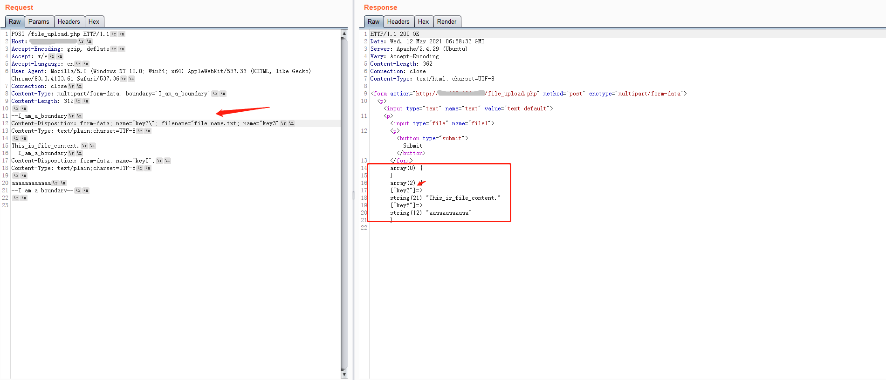
flask/php将之解析为非文件参数，并且根据多个重复的name/filename解析机制，最终解析结果{"name": "key3"}
如果waf并不支持转义符号的解析，只是简单的字符匹配双引号闭合，那么解析结果为{"name": "key3\\", "filename": "\"file_name.txt"}，视为文件参数，将之后参数值视为文件内容，造成解析差异，导致waf可能被绕过。
上文提到php可以使用单引号取值，在单引号中增加转义符的解析方式会和双引号不同，具体可参考php单引号和双引号的区别与用法。
文件扩展名
前文主要提出一些mutlipart整体上的waf绕过，在源站后端解析正常的情况下让waf解析失败不进入规则匹配，或者waf解析与后端有差异，判断是否为文件失败，导致规则无法匹配，或者filename参数根本没有进入waf的规则匹配。无论是在CTF比赛中还是在实际渗透测试中，如何绕过文件扩展名是大家很关注的一个点，所以这一段内容主要介绍，在waf解析到filename参数的情况下，从协议和后端解析的层面如何绕过文件扩展名。
其实这种绕过就一个思路，举个简单的例子filename="file_name.php"，对于一个正常的waf来说取到file_name.php，发现扩展名为php，接着进行拦截，此处并不讨论waf规则中不含有php关键字等等waf规则本身不完善的情况，我们只有一个目标，那就是waf解析出的filename不出现php关键字，并且后端程序在验证扩展名的时候会认为这是一个php文件。
从各种程序解析的代码来看，为了让waf解析出现问题，干扰的字符除了上文说的引号，空格，转义符，还有:;，这里还是要分为两种形式的测试。
token形式Content-Disposition: form-data; name=key3; filename=file_name:.phpContent-Disposition: form-data; name=key3; filename=file_name'.phpContent-Disposition: form-data; name=key3; filename=file_name".phpContent-Disposition: form-data; name=key3; filename=file_name\".phpContent-Disposition: form-data; name=key3; filename=file_name .phpContent-Disposition: form-data; name=key3; filename=file_name;.php前五种情况flask/Java解析结果都是一致的，会取整体作为filename的值，都是含有php关键字的，这也说明如果waf解析存在差异，将特殊字符直接截断取值，会导致waf被绕过。
最后一种情况，flask/Java/php解析都会直接截断，filename=file_name，这样后端获取不了，无论waf解析方式如何，无法绕过。
对于php而言，前三种会如flask以一样，将整体作为filename的值，第五种空格类型，php会截断，最终取filename=file_name，这种容易理解，当没出现引号时，出现空格，即认为参数值结束。

然后再测试转义符号的时候，出现了从
\开始截断，并去\后面的值最为filename的值，这种解析方式和boundary解析也不相同，当然双引号和单引号相同效果。
看代码才发现，php并没有把
\当作转义符号，而是贴心地将filename看做一个路径，并取路径中文件的名称，毕竟参数名是filename啊:)
所以这个解析方式和引号跟本没关系，只是php在解析filename时，会取最后的
\或者/后面的值作为文件名。
quoted string形式Content-Disposition: form-data; name=key3; filename="file_name:.php"Content-Disposition: form-data; name=key3; filename="file_name'.php"Content-Disposition: form-data; name=key3; filename="file_name".php"Content-Disposition: form-data; name=key3; filename="file_name\".php"Content-Disposition: form-data; name=key3; filename="file_name .php"Content-Disposition: form-data; name=key3; filename="file_name;.php"flask解析结果还是依照
_option_header_piece_re正则，除第三种filename取file_name之外，其他都会取双引号内整体的值作为filename，转义符具有转义作用。php第三种也会解析出file_name，但是在第四种转义符是具有转义作用的，所以进入上文的*php_ap_basename函数时，是没有\的，所以其解析结果也会是file_name".php，使用单引号的情况和上文引号部分分析一致。
对于Java来说，除第三种情况外，都是会取引号内整体作为filename值，但是第三种情况就非常有趣，上文
引号部分已经分析，Java会继续取值，那么最后filename取值为"file_name".php"。
所以对于Java这个异常的特性来说，通常waf会像php/flask那样在第一次出现闭合双引号时，直接取双引号内内容作为filename的取值，这样就可以绕过文件扩展名的检测。
4. Content-Type(Body)

对于一些不具有编码解析功能的waf，可以通过对参数值的编码绕过waf。
Charset
对于Java，可以使用UTF-16编码。
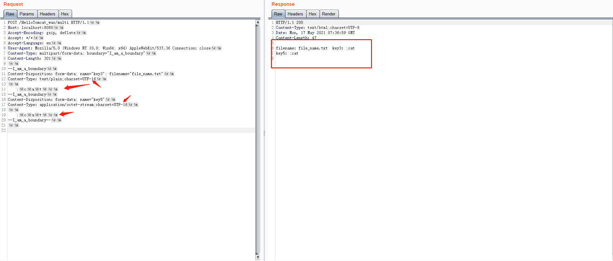
flask可以使用UTF-7编码。
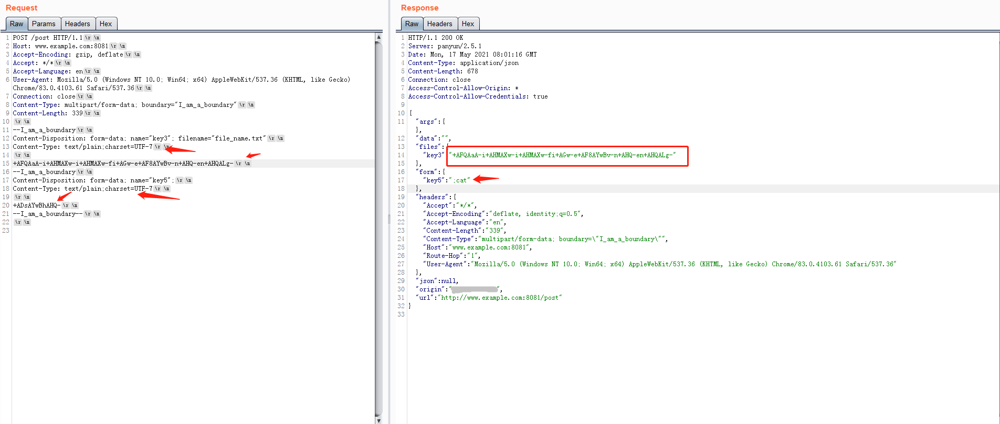
由于Java代码中，会把文件和非文件参数都用org.apache.commons.fileupload.FileItem来存储，所以都会进行解码操作，而flask将两者分成了form和files，而且files并没用使用Content-Type中的charset进行解码werkzeug/formparser.py:L564。
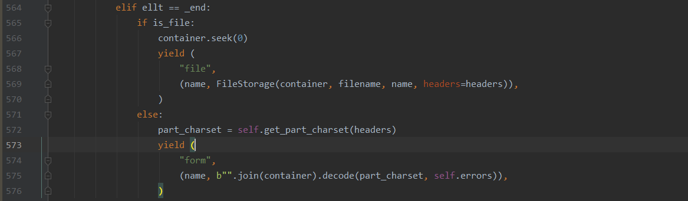
其他
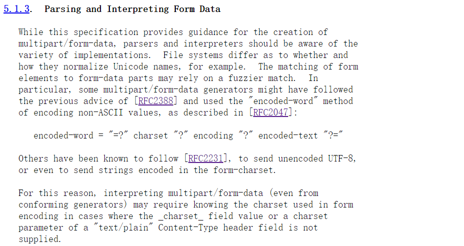
RFC7578中写了一些其他form-data的解析方式，可以通过_charset_参数指定charset，或者使用encoded-word，但是测试的三种程序都没有做相关的解析，很多只是在邮件中用到。
5. Content-Transfer-Encoding
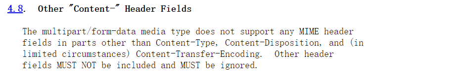
RFC7578明确写出只有三种参数类型可以出现在multipart/form-data中，其他类型MUST被忽略，这里的第三种Content-Transfer-Encoding其实也被废弃。
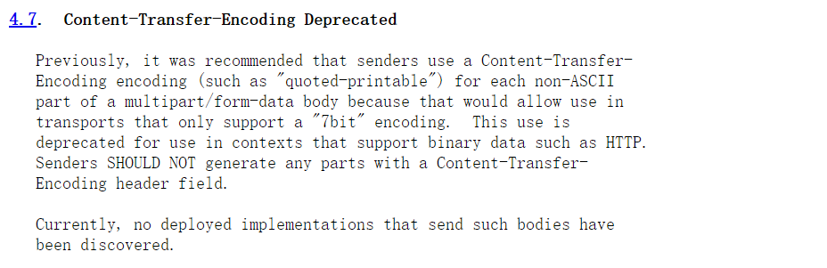
然而在flask代码中发现werkzeug实现了此部分。

也可以使用QUOTED-PRINTABLE编码方式。
参考链接
https://github.com/postmanlabs/httpbin
https://www.ietf.org/rfc/rfc1867.txt
https://tools.ietf.org/html/rfc7578
https://tools.ietf.org/html/rfc2046#section-5.1
https://www.php.net/manual/zh/language.variables.external.php
https://www.cnblogs.com/youxin/archive/2012/02/13/2348551.html